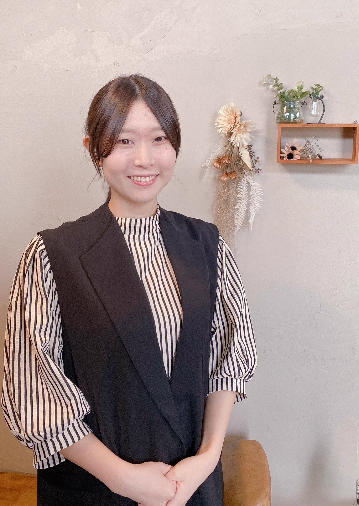

「美容師からアイリストへ。新しい技術を身につけた先に見えたこと」
20代 女性 / 2024年中途入社
美容師（スタイリスト）→ 保険会社事務 → アイリスト

Before：美容師として働いていた頃は、まつ毛の施術は未経験。新しい技術を覚えられるか、最初は不安もありました。
Training：動画で手順を繰り返し見返し、分からないところはその都度確認しながら、少しずつ練習を重ねました。
After：今はアイリストとしてお客様に向き合いながら、できることを一つずつ増やしています。完全予約制なので、成長と自分の時間の両方を大切にできています。
「未経験だから」と止まるのではなく、まず相談してみることが最初の一歩になると思います。